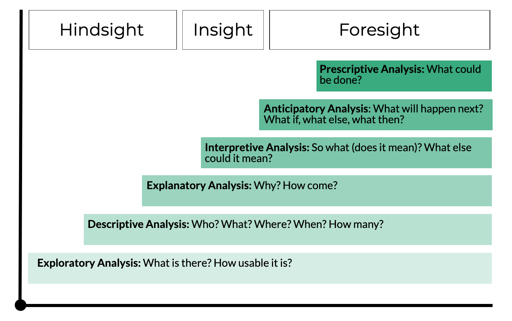
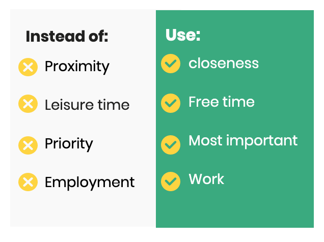

Quick Tips for Good Questions
Examples from the COVID-19 Pandemic
Created by OCHA's Centre for Humanitarian Data / @humdata
Press right on your keyboard or swipe left to navigate.
“If I had an hour to solve a problem and my life depended on the solution, I would spend the first 55 minutes determining the proper question to ask, for once I know the proper question, I could solve the problem in less than five minutes.”- Albert Einstein
All data exercises start with a question. Questions drive our data collection, focus our analysis and shape our visual design choices. In this lesson, we will get back to basics in order to learn the art of good questions.
This session includes a series of slides to build your knowledge, a set of five xx videos to demonstrate xx and a short quiz to test your knowledge. The expected length of time to complete all segments is 25 minutes.
In this introductory session to formulating questions using examples from the COVID-19 pandemic, you will learn:
- best practices for designing data questions;
- how identify different question types; and
- put these concept to practice by designing a data collection forms in Excel.
04: Question Types & Data Collection Forms
The Art of Good Questions
We Ask Questions to Frame and Collect
In this sessions we will focus on two distinct types of data questions:
We ask questions to frame our data exercises. This can be thought of as our research question. It helps define the data we need and guides our entire process. High-quality data and data-driven insight all start with a good question.
We ask questions to collect primary data. These types of questions help us acquire the data we need to answer our framing question. How we ask a question shapes the answers and the resulting data.
Using Questions to Frame a Data Exercise
Ask, Answer, Act
The ability to formulate good questions is a uniquely powerful tool for unlocking value in data.
Every data exercise, whether you are starting a multi-sector needs assessment, conducting analysis for an HNO or assessing the effectiveness of a community meeting, requires you to first define the question(s) you are trying to answer.

Questions That Frame
A framing question is a fundamental element in any data exercise. It is also frequently an under-appreciated and overlooked part of the process. Why do framing questions matter?
- Questions focus and frame all data exercises.
- At every step of the data management process, we use our question to inform our actions and outputs.
- Poorly defined questions can lead to misaligned data processes where we collect data we do not need and produce analysis that does not help us act.
Type of Framing Questions
Are you seeking to describe, explain, interpret, anticipate a phenomenon or prescribe a response? These different forms of analysis start with distinct framing questions.
Descriptive Questions
Descriptive questions seeks to summarise or compare data about a given phenomenon. Descriptive quesstions ask who, what, how many, and where. Examples include:
- What measures have governments taken to slow the spread of COVID-19 in low and middle income countries?
- How many cases of COVID-19 have been reported in locations with a Humanitarian Response Plan?
- What are community perceptions about the COIVD-19 pandemic in location?
Explanatory Questions
Explantory questions seek to find associations, correlations, connections and relationships between data points. Questions like what follows what, what happened next, what else could explain what we are seeing are all examples of explanatory questions.
Interpretive Questions
Interpretive questions aim to move analysis beyond simply stating findings towards drawing well-supported conclusions based on data. Severity indexes are a good example of this type of analysis as they seek to evaluate evidence and rate severity.
Anticipate Questions seek to Predict
Anticipatory or predictive questions seek to look at the future and use past data to predicitive future outcomes.
Asking the Question Right
Questions for Data Collection
Now that we have a right framing question, we need to make sure we translate it into data gathering questions that help us to acquire the data we need to ansswer our framing quesstions Different question framing and structures will produce different data.
- Question Anatomy
- Question Types
- Data Types
- Response Options
Anatomy of a question
Data collection questions have three distinct components, all of which influence the data you will collect.
- The wording of the question influences the answer. To collect accurate data, make sure you use clear terminology, that your question is measuring what it intends to measure, and that the question is answerable and unbiased.
- The response options to the question will shape the data you collect and what you can do with the data. How the question can be answered ranges from structured to unstructured.
- The prompts are directions provided to respondents on how to answer the question you asked. These instructions are useful in preventing respondent errors.
Question Types
Broadly speaking, in a a data collection exercise you can ask open-ended and closed-ended questions.

Understanding Open Ended Questions
Open-ended questions give your respondents the freedom to answer in their own words, instead of limiting their response to a set of pre-selected choices. Examples include:
- How do you think COVID-19 is transmitted?
- How do you think the situation with COVID-19 will evolve in the next three months?
Note: It is often common to include an open ended response option of “Other Specify” whereby if a respondent’s predefined response is not listed a respondent can specify it in their own words.
Using Open Ended Question Data
Opened ended questions result in text that is referred to as unstructured data. This type of data can be rich with information impossible to gather through closed-ended questions. Open-ended questions help you learn about respondent needs you did not know existed and can help focus attention on topics you had not considered.
The drawbacks of opened ended questions is that unstructured data often takes longer to analyse and has limitations in terms of the calculations that can be performed.
Understanding Closed Ended Questions
There are many different types of close ended questions but what they all have in common is that they produce structured data. Most of the time we want data that is standardised or has a common structure. This makes it easier to collect and perform calculations.
- You can ask for precise answers or specific pieces of information to be given, for example, What is your age?
- Or, you can provide predefined responses. e.g. what is your age? a)18-22 years, b)23-27 years, c)28-32 year, d)33 or older). e.g. are you 33 years or older? a) yes, b) no).
Data Types
Depending on how you ask a question, you will produce different types of data. The data type, sometimes referred to as measurement scale, determines the type of statistical operations and analysis that can be performed. Categorical data is qualitative and can either be nominal or ordinal. Numeric data is quantitative and can either be interval or ratio.

Nominal Data Questions
Categorical nominal data is data that has two or more categories that do not have an intrinsic or logical order. Countries, gender and humanitarian sectors are all examples of categorical nominal data. Categorical nominal data questions often present respondents with predefined response options that are non-numeric in nature.

Nominal Data Analysis
If you have nominal data you can calculate the frequencies, how often each category occues and use the mode as the measure of central tendency. A pie chart could be used to display this data.
ADD AN EXAMPLE
Ordinal Data Quesitons
Ordinal data is categorical data in which the categories can be arranged in a meaningful order. To remember, think ordered for ordinal. One important caveat is that on an ordinal scale, the order of response categories is significant, but you cannot quantify the exact difference between each category.

Ordinal Data Analysis
If you have ordinal data you can calculate the frequencies and percentage for the different categories. For the measure of central tendency you can use both the mode and the median. Bar charts are great for visualising ordinal data.
ADD AN EXAMPLE
Numberic Data
Numeric data can either use an interval or ratio scale.
- Interval values can be ordered, and the distance between each number is meaningful but arbitrary. Think of interval scales as scales created by humans. This type of data is not very common in the humanitarian sector, but examples include time, temperature and oedema.
- Ratio values can be ordered, and the distance between each number has meaning. Importantly, for ratio values the value of zero is meaningful (i.e. zero means a complete absence). Examples are age, household size, height and weight. This is the most versatile data in terms of calculations that can be performed.
Ratio Data Analysis
Ratio data is what we commonly think of when we think about numberic data. The number of people in need, number of confirmed cases of COVID-19 and age are all examples of ratio data. In data collection forms, collecting clean ratio data means using an closed-ended questions and prompting a specific-response. Data validation in collection forms is helpful here.
Statistically, this data is the most versatile.
- You can calculate the mode, median and mean.
- You can add and subtract the values.
- You can multiply or divide the values.
Response Options
Close-ended questions have an expected pointed response. When formulating response options, consider:
- The level of precision needed. This will determine if you provide predefined response options, with options you determine or an “Other, Specify” field, to capture exact or approximate answers.
- Providing valid responses to help standardise responses. If an answer can only be a yes or no, make those the predefined response options to avoid getting a maybe or somewhat.
- Specifying formats to avoid misinterpretation. If date formats should be two digit UK format make that a prompt (dd/mm/yy).
Structured Response Options
Structured response formats can be specific response, multiple choice single select and multiple choice multi-select.

Best Practices for Good Questions
Use Precise, Simple Language
Some concepts may mean different things to different people. Be as specific as possible with question wording. This means ensuring vague terms are clearly defined (e.g vulnerability, adequate, etc.)
Specify the Unit of Measurement
To limit confusion, ensure questions have a clear unit of measurement, such as a number or a percentage.
Make Questions Answerable
Avoid Introducing Bias
Avoid leading questions and loaded terms
Be Culturally Aware
Identify and carefully introduce questions on sensitive topics, and most importantly make sure you need the information on sensitive topics.